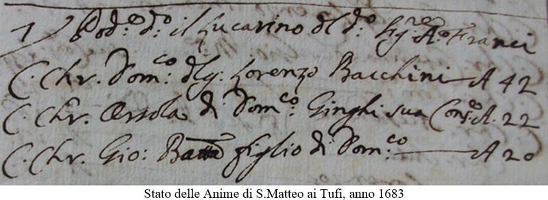

|
|
 |
2 luglio 1682
giovedì
|
- prima di iniziare la lettura, si consiglia di leggere l'introduzione -
La Biccherna1, nel bandire la corsa, aveva stabilito che le Contrade che volevano parteciparvi dovevano mettersi in nota entro il 20 giugno e che, passata tale data, non ne sarebbero state ammesse delle altre.
Ciò conferma che la partecipazione al Palio era volontaria e, di conseguenza, il numero delle Contrade era variabile, in quanto chi decideva di prendervi parte doveva sobbarcarsi la spesa per la comparsa e non tutte avevano i mezzi per affrontarla.
L'effettuazione di questo Palio, ignorato dall'Elenco Generale del Comune, risulta anche da documenti coevi quali le memorie della Compagnia Laicale di San Domenico2 e dagli archivi delle Contrade dell'Oca3 e della Tartuca, che aveva nominato due contradaioli "per le corse dei due palii di quest’anno che si dice deva corrersi in Piazza"4.
In quei primi giorni d’estate, Siena deve essere stata colpita da una violento temporale, tanto che “udito et atteso che l’acqua portò via tutta al rena portata in Piazza per corrersi il Palio, fu necessario far comandar di nuovo la Comunità a portar la rena”5.
Non sappiamo quante e quali Contrade vi partecipassero e non è da escludere che fossero le stesse che avevano deciso di correre il 28 giugno. Anche l'attribuzione della vittoria, alla Tartuca con Bacchino, non è certa perchè priva di riscontri storici.
Bacchino, ossia di Domenico (o Pier Domenico) Bacchini, era nativo del territorio fiorentino e, trasferitosi a Siena, andò ad abitare in un podere detto il Lucarino, fuori Porta Tufi, di proprietà del Signor Agostino Franci6.

NOTE:
[1] ASS, Biccherna 889, 6 giugno e 1° luglio 1682, cc. 15 e 19
[2] ASS, Patrimonio Resti 703, Compagnia di S.Domenico in Campo Regio, c. 236v
[3] ACOc, Deliberazioni 1667-1745, libro C, c. 51v
[4] ACTa, Libri Primo deliberazioni 1666-1702, c. 14 e 14v
[5] ASS, Biccherna 889, 19 agosto 1682
[6] AAS, Stati delle Anime di S.Matteo ai Tufi 2815, anno 1683

ABBREVIAZIONI BIBLIOGRAFICHE


RIEPILOGO
VITTORIE
DAL 1633
AL 1691

|
|
|